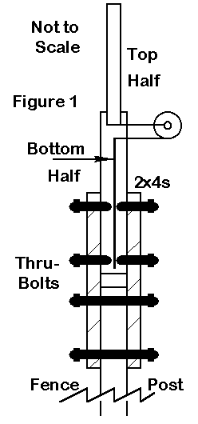

No. 26: When Should I Use a Vertical on 10?
No. 26: When Should I Use a Vertical on 10? 
Most of the antenna we have discussed in this column have been horizontally polarized. There are some good reasons for this fact. First, 10-meter horizontal antennas are fairly compact, with a half wavelength being about 16-17' long. Second, the shortness of a wavelength on 10 meters (35') generally simplifies the process of supporting a horizontal 10-meter antenna at a good height (at least 1/2 wavelength, with over 1 wavelength preferred for best performance). Third, even 3-element 10-meter Yagis are fairly light-weight, for easy support, even in field or hilltop operations.
Nevertheless, there are some good reasons for using a vertically polarized antenna on 10. Although the gain of such antennas may not usually compete with a well-installed horizontal antenna of the same size, this factor is rarely a problem when the band is open. So let's look at the question of when to use a vertical.
1. Mobile in Motion: The standard these days for mobile-in-motion operation is the short, center-loaded, magnetic mount vertical set on the car roof. Although the least efficient of almost any antenna used on 10, these antennas acquit themselves well. Full size 1/4 wavelength whips have gone out of vogue, especially with the increased use of plastics in autos. When auto bodies themselves become universally plastic or fiberglass, we may have to rethink the center-loaded mag-mount vertical for mobile operation.
2. Lunch-Time Operation: With small rigs, short antennas, and an open band around noon, 10-meter lunchers are more numerous than we imagine. Since the lunch hour (or half-hour) is all too brief, operators want a system that wastes no time in set-up and take-down. The vertical--again, usually a mag-mount antenna in the parking lot--fills the bill.
3. Local Convention: In some towns and cities, most of the locals may use vertical antennas. Sometimes, this represents a lot of mobile work; sometimes it represents former citizen's band operators who have joined the amateur ranks and cut down their old antennas to resonate on the higher frequencies. Since local work is mostly point-to-point, as in VHF operation, cross- polarized antennas result in major losses in signal strength. So if the local group is mostly vertical, then it will pay you to have a vertical at home (as well as on the car) to join the fun full strength.
Since the path through the ionosphere generally skews signal polarization, distant stations will not suffer from being cross polarized relative to your antenna.
4. Lack of Space: Many hams live in homes without large yard. So space for antennas must compete for space with play equipment, patio furniture, and flower gardens. A vertical may be the only antenna type the home owner can erect.
The question here is not whether to use a vertical, but what kind of vertical to use. There are a number of multi-band verticals now on the market that will open many of the ham bands. They come in two major types.
If the roof top is the mounting area of choice, then one of the 1/4 wavelength trap verticals may be best. The heaviest part of the antenna is mounted near the roof top or chimney mounting system for maximum support. The necessary radials, installed according to the antenna makers instructions, can run along the roof top. If the antenna is at the end of the house, radials in the open direction can be run to trees or fence post, well out of reach of children or adults.
Where space is too restricted for an elevated radial system, one of the half wavelength verticals may be more fitting. Some demand an elevated mounting point and may rest well on top of a fence post, short flag pole, or even a mast attached to a deck post. Other models call for ground mounting and can be placed in the most clear usable place in the yard with buried coax.
In all such installations, safety to children, family members, visitors, and neighbors is a top requirement. These antennas are rarely large enough to cause damage to neighboring property if they fall. Of course, they should be well clear of any utility lines crossing the yard. Finally, they should be isolated so that no one can get an RF burn by touching the antenna while in use. For some models, we achieve this last safety measure by elevating the antenna above reach, even by fence-climbers. Ground-mounted models require some extra thought. Setting up a flower bed and small fence around the antenna can keep most folks away. Sheathing the lower portion of the antenna in large-diameter black plastic down-spout drainage pipe for about 8' up is quite effective in preventing children from touching the antenna and has been found not to adversely affect performance. The protective sheathe can be attractively painted (with non-metallic paint) to call attention away from the antenna. Whatever the safety measures we take, we should also insure that they meet FCC requirements regarding RF exposure to other people.
 Even hams with room for a host of horizontally polarized antennas may wish to consider installing one of these multiband verticals. They make good (even if not great) low-band antennas, provide back-up service in case the main beams collapse in high winds or ice, and allow the operator to match the polarization of locals using mobile whips or other vertical antennas. so even if you can afford the highest, the biggest, and the best, one of these simpler antennas makes good sense as part of the antenna farm.
5. Home Brewers: Some of us like to build antennas. Some of us have to build antennas to save the cost of commercial versions. Whatever the reason, a vertical dipole for mounting at least 20 to 25 feet up at the center on a non-conducting mast is a good starter project. I suggest a vertical dipole, since it saves a lot of grief over where to run the radials for a quarter- wavelength ground-plane model. The vertical dipole also takes less space than a horizontal dipole and requires no turning for maximum signal.
You can construct a vertical dipole from hardware store materials: aluminum rod or tubing (a little over 8'), PVC, and wood are the main ingredients. Figure 1 shows in bare outline a vertical dipole I once used to capture Worked All Continents in about an hour at the height of a long-ago sunspot cycle. The 4x4 fencepost was the main support, with underground bracing from bagged concrete. The side rail 10' 2x4s supported a good quality 2x4 mast, with the 4" side running between the rails. Two long galvanized bolts braced the mast. Removing the lower bolt permitted tilt-over operation.
The antenna itself began with an 8' length of aluminum tubing for the top extension. The lower part of the antenna consisted of insulated #12 house wire, purposely cut long. I tuned the antenna to frequency by trimming the lower wire for minimum SWR. Many local hams seemed initially horrified by the idea of a dipole made from unequal diameter elements and trimming only one end. They thought that terrible things would happen to performance, since the antenna was obviously as unbalanced as its builder.
Actually, virtually nothing happens except for a bit of building and adjusting convenience. Half wavelength antennas lose nothing in performance by being fed slightly (or even radically) off-center. The feedpoint impedance does not begin to change noticeably until the feedpoint is well off center. The only precaution was for safety: the dipole end is a high-voltage point on the antenna, so it had to be inaccessible to human touch when in operation.
There you have it: some good reasons for using vertical antennas on 10 meters, whether they are commercial multi-band antennas or home brew specials. There are other reasons of a specialized nature that we could add. For example, if you live by the seaside, expect an exceptional increase in performance over the same antenna placed on a rocky hillside in the Smoky Mountains. Verticals have proven to be more than good enough in some island contesting locations. Some operators even prefer the wider beamwidth of a vertically oriented Yagi to one that is horizontal. Whatever the reasons, vertical have and will always have an important place in 10-meter operation, even if we never mention FM and repeaters at all (which I just did).
Updated 1-12-2000. © L. B. Cebik, W4RNL. Data may be used for personal purposes, but may not be reproduced for publication in print or any other medium without permission of the author.